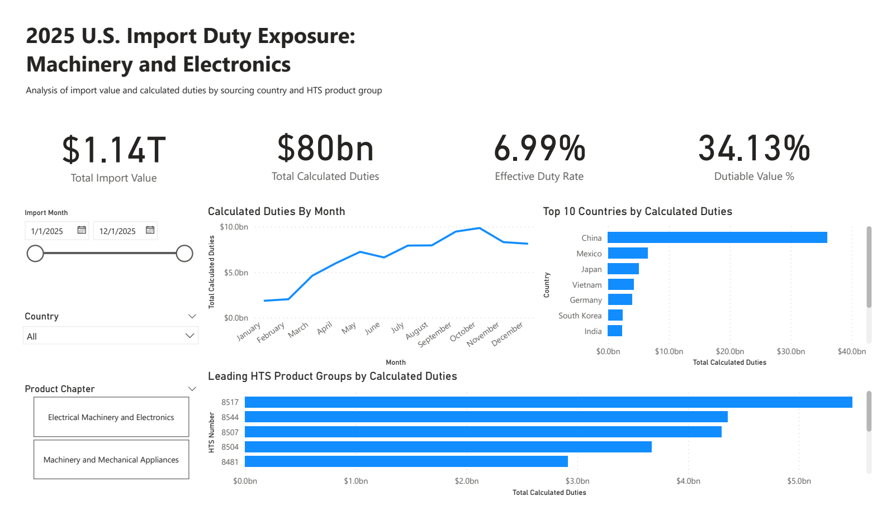
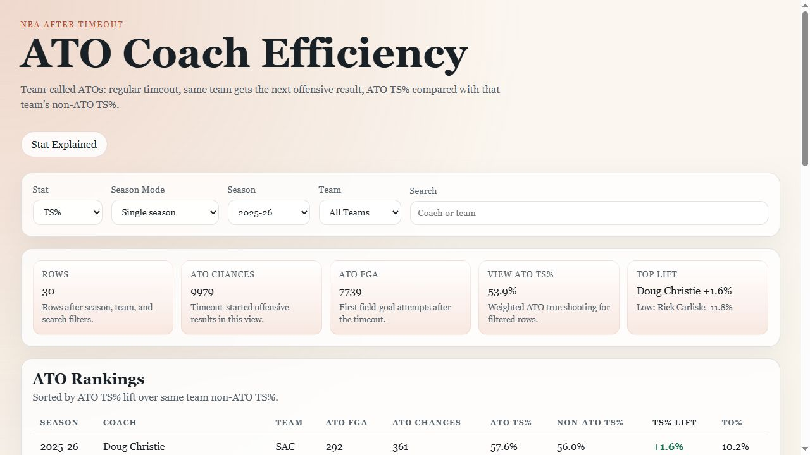
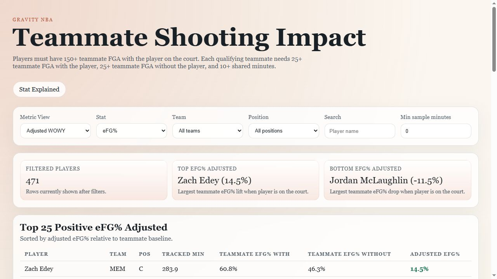
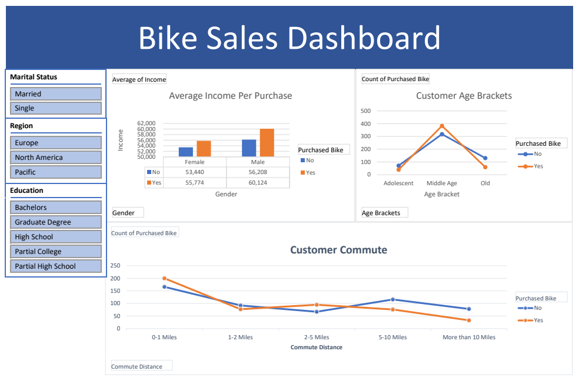
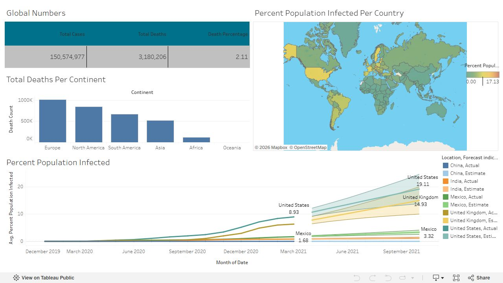
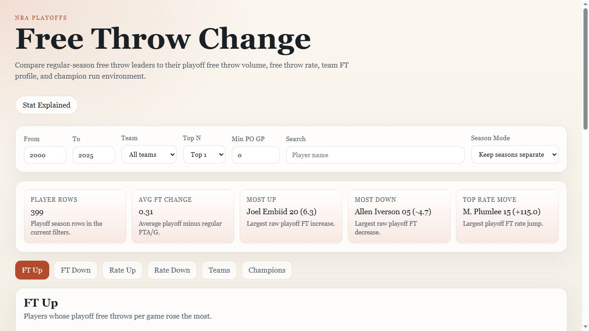
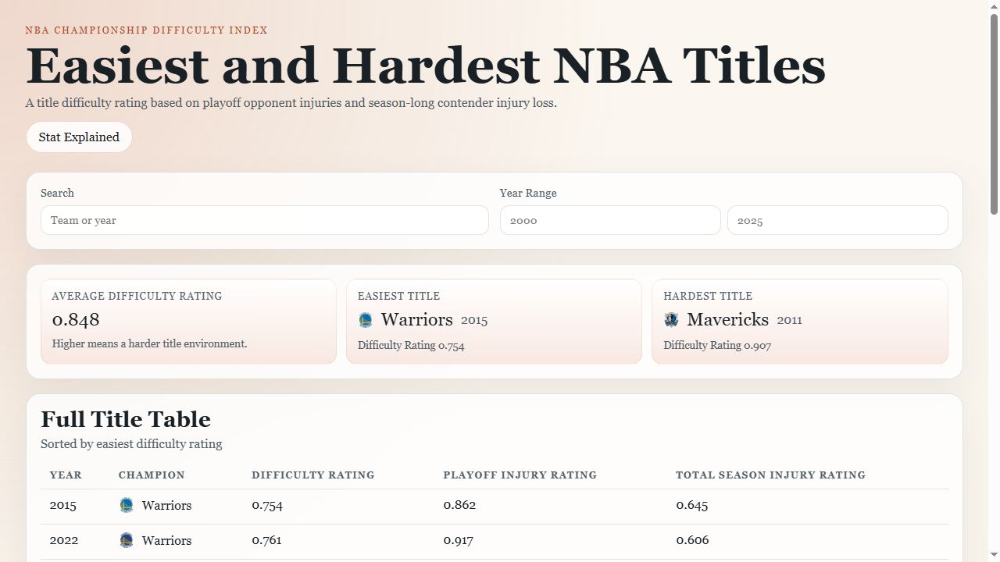
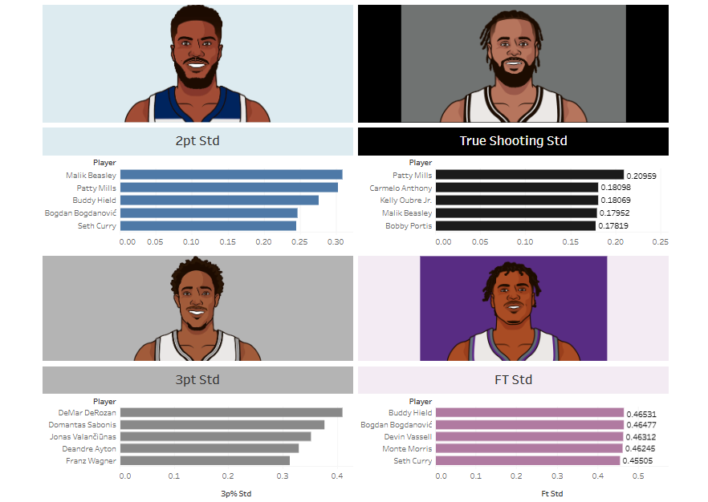

HOVER / 4 DASHBOARD PAGES
HOVER / 4 DASHBOARD PAGES


Walmart Store Performance
Reconciled $2.00B in retail sales with an illustrative plan using Python, SQL, Excel and Power BI.
ANALYSIS MEETS MAKING THINGS
I’m Connor. I turn scattered data and repetitive work into clear reporting, practical systems, and tools people use.
New York · Boston · RemoteHOVER / 4 DASHBOARD PAGES
Reconciled $2.00B in retail sales with an illustrative plan using Python, SQL, Excel and Power BI.


HOVER / VIEW DASHBOARDMapped $1.14T in imports and the countries and product groups driving calculated duty exposure.

1,000+ users: per-tab audio routing, one-ear repair, mono mixing and channel controls.
View ExtensionBuilt a browser tool that fills multi-step applications, checks answers, resumes interrupted work and flags uncertain steps for review.
View Workday Example

Ranked NBA coaches by after-timeout shooting lift using play-by-play data.
View Dashboard

Explored how teammate shooting changes when a player is on or off the court, with adjustments for lineup differences.
View DashboardTracked applications and surfaced salary and location filters on LinkedIn and Indeed.
View Extension
Scanned Steam libraries and recommended games, with filters, sorting and previews.
View Extension
HOVER / VIEW EXCEL DASHBOARDExplored purchase patterns with three PivotTables, PivotCharts and slicers for customer groups. An Excel practice project with a downloadable workbook.
 HOVER / VIEW SQL
HOVER / VIEW SQL
Cleaned housing records in SQL: dates, addresses, missing values, categories and duplicates.
View Code

HOVER / VIEW DASHBOARDExplored global cases, deaths and vaccinations in SQL, with a Tableau dashboard.


Compared free-throw rates and volume between the regular season and playoffs.
View Dashboard

Ranked championship paths using opponent availability and injury impact.
View Dashboard

Scraped player-game data with Python and explored shooting consistency in Tableau.